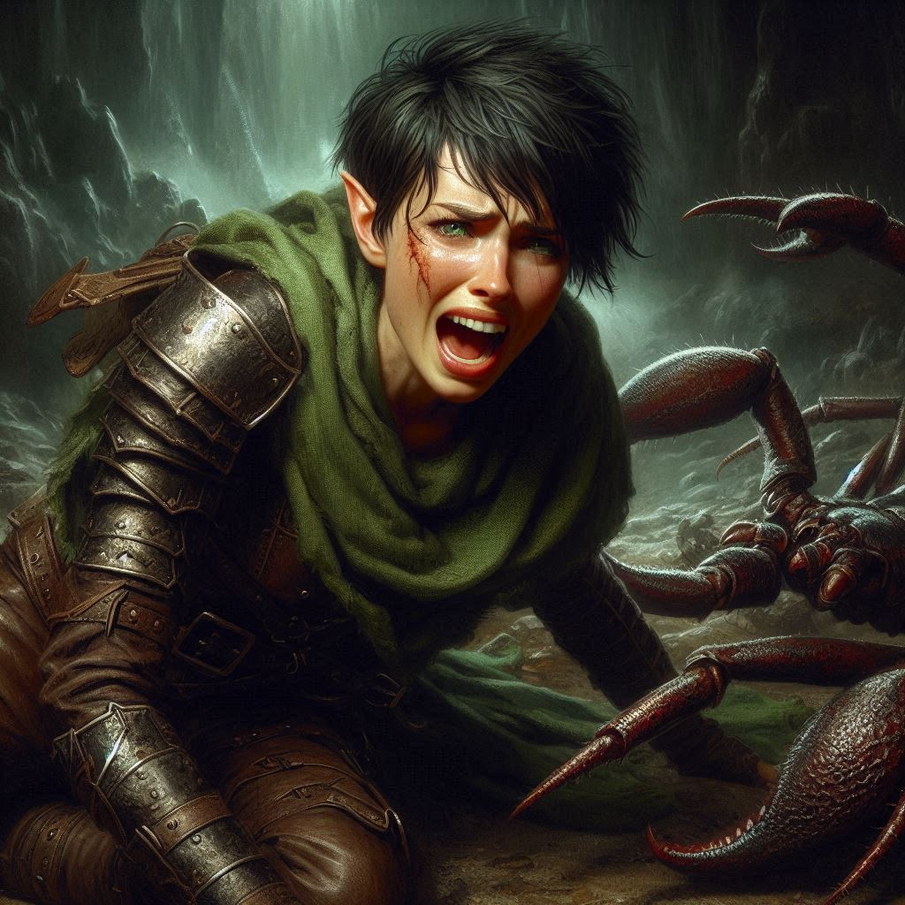

The Sting of Betrayal
You stare down the row of mercenaries, their black armor gleaming in the dim light of Hemlock Caverns. The air is thick with tension. Princess Hawthorn stands beside you, her expression unreadable, her violet eyes sharp with calculation. You clench your fists, heart pounding in your chest, torn between your sense of duty and the gnawing feeling that surrendering is a mistake.
Hawthorn’s voice cuts through the silence, firm but calm. "Surrender," she says quietly, meeting your gaze. “There’s no way out.”
Your jaw tightens. You don’t want to give in, but her authority, her calm in the face of such danger, steadies your resolve. You glance over at Elias, who is watching you with a mix of confusion and disappointment. Baider shifts beside him, his tusks bared in frustration, hand inching toward the war axe strapped to his back. But neither of them move. They’re waiting for you.
With a deep breath, you sheath your blades. "We surrender," you say, your voice steady though your heart screams at you to fight. Elias shoots you a disbelieving look, but after a beat, he nods, following your lead. Baider grunts in disapproval but does the same, letting his hand fall from his weapon.
The leader of the mercenaries, a tall man with a cruel smirk, steps forward. His eyes flicker with amusement as he sizes you up. “Smart choice, girl,” he sneers. “But too late. The portal’s already being opened, and Varis will have his army soon enough.” He gestures to his men, who close in around you, shackles in hand.
As they bind your wrists, you glance at Hawthorn. She holds her head high, regal even in captivity. But there’s a flicker of something in her eyes—fear, perhaps? Regret? Whatever it is, it’s gone in an instant as she addresses the mercenary captain. “My guards will come for me. You won’t escape.”
The captain laughs, a harsh sound that echoes through the cavern. “Your guards? Bought and paid for by Varis. They’re not coming, princess.”
A cold knot of dread tightens in your stomach. You should have known. Varis’s reach is longer than anyone anticipated. The royal guard—betrayed, just like everything else in this kingdom. The princess doesn’t falter, but you can see the truth sinking in. Her plan, her defiance, it’s unraveling before your eyes.
The mercenaries shove you and your companions forward, deeper into the caverns. The rocky passage grows narrower, the air more stifling as the shadows close in around you. You walk in silence, the only sounds the clinking of shackles and the dull thud of boots on stone.
After what feels like hours, they lead you into a large chamber. Your breath catches in your throat. The room is massive, the ceiling lost in darkness, but your eyes are drawn to the floor—alive with movement. Giant scorpions, their chitinous bodies shimmering in the dim light, skitter across the ground, pincers snapping at the air.
“No,” you whisper, a sickening realization dawning on you. This isn’t just a holding cell. It’s an execution.
The captain grins wickedly as he unshackles you and your friends, pushing you forward toward the writhing mass of creatures. “Welcome to your end, heroes,” he says mockingly. “Enjoy.”
Baider roars in fury, grabbing his axe and swinging it wildly at the nearest mercenary. The blade meets flesh with a sickening crunch, but there’s no time to celebrate. The scorpions are already upon you.
“Fight!” you shout, drawing your swords, the adrenaline drowning out your fear. You strike at one of the creatures, severing a pincer, but another lunges at you from behind. You barely dodge, feeling the sharp sting of its tail graze your side.
Elias is beside you, arrows flying from his bow, each one finding its mark, but there are too many. Baider swings his axe with wild fury, cutting down scorpions left and right, but even he can’t hold them off forever. You glimpse Hawthorn in the chaos, her sword flashing as she fights alongside Liora, the sorceress casting spells that shatter the scorpions’ carapaces.
But it’s not enough.
A scorpion's tail pierces Elias’s leg, and he cries out, collapsing to the ground. You rush to his side, slashing at the creature before it can finish him off. “Get up!” you shout, pulling him to his feet, but his face is pale, blood pouring from the wound.
“Kira…” he breathes, his voice weak. “I’m sorry.”
“No,” you say, panic rising in your chest. “We’re not done yet!”
But the scorpions keep coming. Another lunges at Baider, and though he blocks the attack, its tail strikes him in the chest, piercing through his armor. He staggers back, blood bubbling from his mouth as he falls.
“No!” You scream, but there’s nothing you can do. The mercenaries watch from the sidelines, laughing at your struggle.
In the end, it’s hopeless.
A scorpion’s tail strikes your shoulder, the pain white-hot and blinding. You drop to your knees, gasping for breath. Hawthorn is on the ground too, surrounded, her sword knocked from her hand. Liora collapses beside her, spent from her magic.
You fight to stay conscious, but the poison in your veins drags you down. The last thing you see is the smirk on the mercenary captain’s face, and the dark shadows of the Realm of Shadows creeping ever closer.
Evil has won.